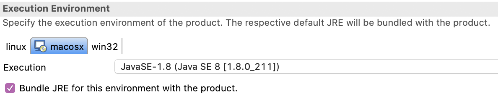
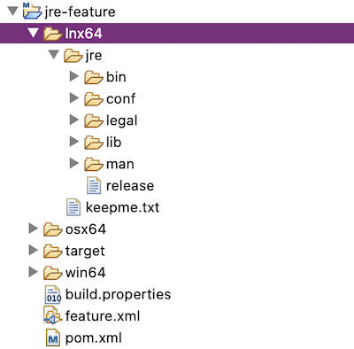
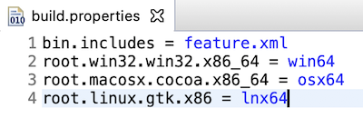
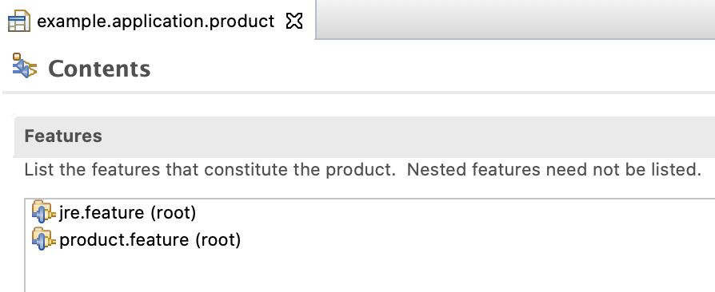
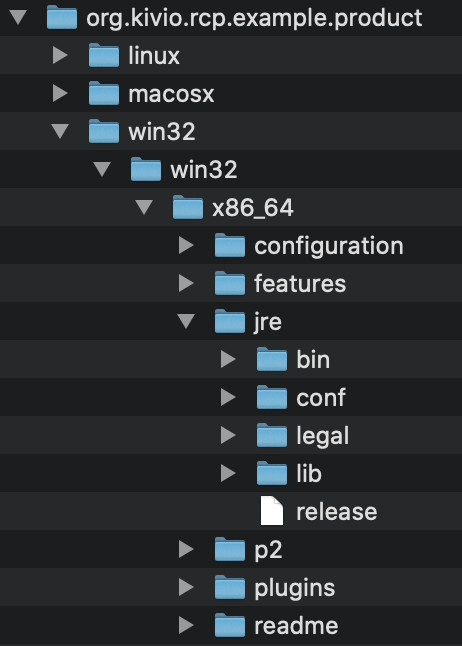

JRE mit Eclipse RCP-Anwendung bündeln
Die Auslieferung der eigenen Eclipse RCP-Anwendung ist mit Tycho fast ein Kinderspiel. Ebenso einfach lässt sich die Anwendung auch mit ihrer eigenen Java Laufzeitumgebung (JRE) bündeln. In diesem Beitrag zeige ich wie das funktioniert und stelle alternative Wege vor.
Seit einiger Zeit ist der Bau von Eclipse-Anwendungen mit Tycho der präferierte Weg, um eine auslieferbare Anwendung zu erstellen. Während in der guten, alten Plugin Development Environment (PDE) beim Produkt-Export eine Execution Environment angegeben werden kann, ist dies bei Tycho nicht so offensichtlich.

Tycho nutzt das Konzept der Root files zur Einbindung von statischen Dateien und somit auch der JRE.
Nutzung von Root files
Die Root files sind ein Relikt aus dem PDE-Build. Root files finden immer dann Verwendung in einem Build von Eclipse-Anwendungen, wenn statische Dateien oder Ordner in eine Installation eingebunden werden müssen, die sich nicht über ein Feature oder Plugin abbilden lassen.
Typische Beispiele sind die config.ini oder Lizenzdateien. Ebenso Eclipse-Installationen mit einer paketierten JRE. Über die Datei build.properties wird das Hinzufügen statischer Elemente zur Installation gesteuert. Die Konfiguration folgt einem Baum-artigen Muster bzw. ist vergleichbar mit den Property-Strukturen in Java. Die Parameter beginnen immer mit root.
Details zu den Root files können der offiziellen Eclipse Hilfe entnommen werden. Die Möglichkeiten sind einen eigenen Blogbeitrag wert.
Statisches Bundling über Rootfiles
Zum Bündeln der JRE mit dem eigenen Produkt, sollte zunächst ein eigenes Feature erstellt werden, dass ausschließlich für die Verwaltung der auszuliefernden Laufzeitumgebungen für die unterstützten Plattformen genutzt wird.
Innerhalb des Features werden für die verschiedenen Umgebungen Ordner angelegt in die die JRE kopiert wird (siehe Screenshot).

Dabei spielt die Bezeichnung des Root-Ordners keine Rolle. Wichtig ist der Ordner mit dem Namen jre unterhalb. Beim Produktexport wird dieser in den Root-Ordner des Produkts exportiert. Die Eclipse-Launcher suchen parallel zu ihrem Installationsort nach einem Verzeichnis mit dem Namen jre und nutzen die darin befindliche JRE zum Start der Eclipse-Anwendung.
Im Screenshot sind die Laufzeitumgebungen für die 64-Bit Versionen von Windows, Linux und Mac OS zu sehen. Die Magie beim Bauen und die Zuordnung zur exportierten Umgebung erfolgt über die Datei build.properties, die im Textmodus bearbeitet werden muss. Die grafische Ansicht in der Eclipse IDE unterstützt das Editieren von Root files derzeit nicht. In die Datei fügen wir die folgenden Zeilen ein:
root.win32.win32.x86_64 = win64
root.macosx.cocoa.x86_64 = osx64
root.linux.gtk.x86_64 = lnx64
Final sollte die build.properties wie folgt aussehen:

Die Struktur für die Definition der Root files folgt damit den Parametern zur Definition einer Target Environment in Tycho.
Anschließend muss das Feature noch in der Produkt-Definition eingefügt werden, sodass es beim Materialisieren des Produkts berücksichtigt wird.

Beim Bau der Anwendung mittels Maven/Tycho werden die Angaben für die Zielumgebung auf Basis der Architektur und des Betriebssystems interpretiert und im erstellten Produktverzeichnis jeweils ein Verzeichnis mit dem Namen jre passend zur exportierten Plattform erstellt.

Mehr Dynamik mit dem Maven-Universum
Die vorangegangenen Ausführungen haben einen Schwachpunkt=Wenn das Projekt versioniert ist (was es in einem professionellen Kontext hoffentlich ist), so werden Binärdateien zusammen mit dem Source-Code eingecheckt. Das ist nicht schön und sehr statisch.
Besser wäre es, die aktuelle JRE für die jeweiligen Umgebungen während des Builds zu laden und dynamisch einzubinden. Damit wird vergleichbar den Maven Dependencies ein Mechanismus geschaffen, der bei Bedarf Abhängigkeiten aus einer zentralen Quelle lädt. Damit dies nicht bei jedem Build von vorne passiert, sollte das dafür zuständige Plugin wissen, welche Dateien bereits geladen worden sind.
Genau für diesen Zweck existiert das Download Plugin für Maven. Es besitzt das Goal wget zum Laden von Dateien aus HTTP-Quellen ohne die Nutzung von zusätzlichen ANt Skripten. Weiterhin unterstützt es Caching und kann bei der Angabe eines MD5-Hashes die Signatur eines heruntergeladenen Artefakts prüfen.
Ein weiteres Goodie=Mit der Option unpack können komprimierte Artefakte direkt im Zielverzeichnis entpackt werden. Es ist nicht notwendig, das Maven Assembly-Plugin separat zu starten.
In unserem vorangegangenem Beispiel wird nun die POM überarbeitet. Für alle unterstützten Zielarchitekturen laden wir das Adopt OpenJDK und entpacken es in das Zielverzeichnis.
Anschließend wird das Verzeichnis noch in jre mithilfe des Antrun-Plugins umbenannt.
{% gist 2db9c15eb483fb9ab5a7f8765ea29599 %}
Das vollständige Beispiel inkl. kompilierfähiger und ausführbarer Anwendung findet sich auf Github in den RCP Examples als rcp01 klassifiziert.